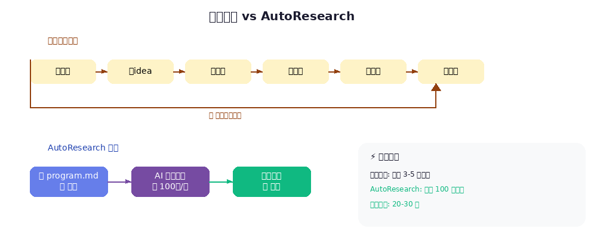
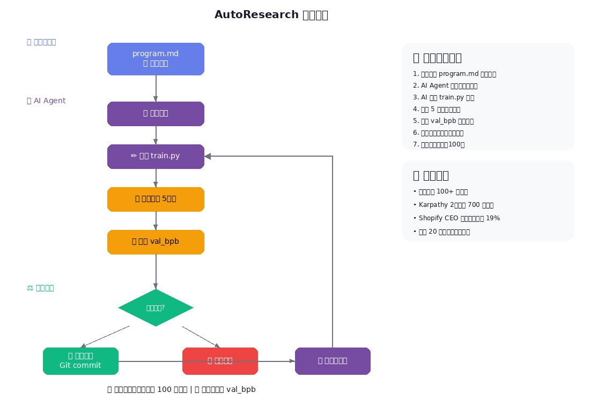
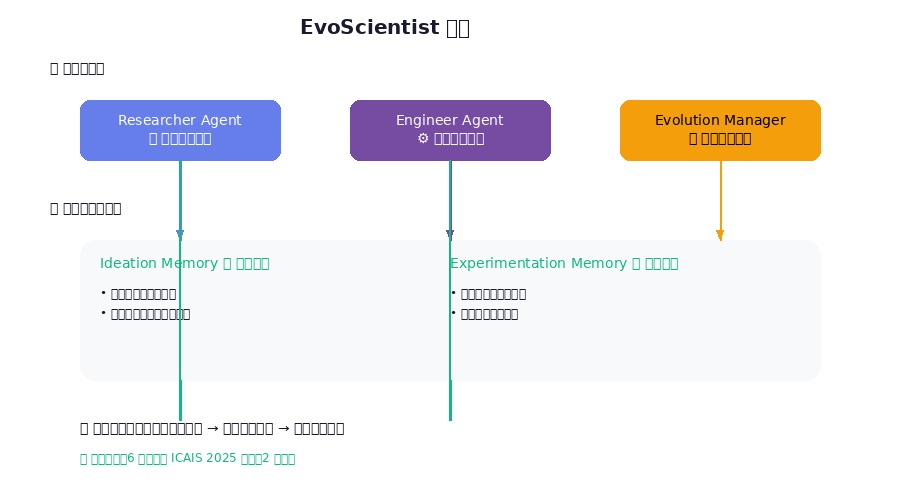
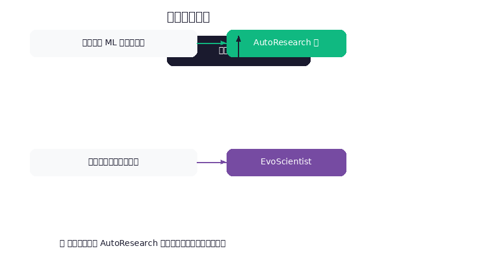
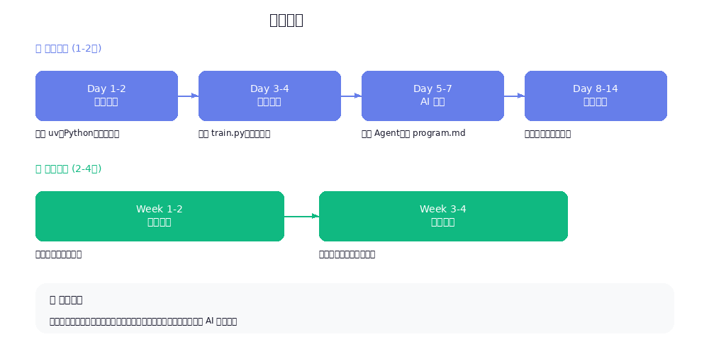
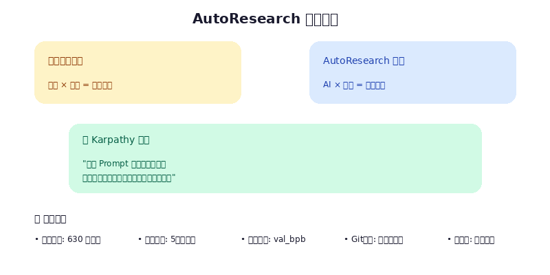
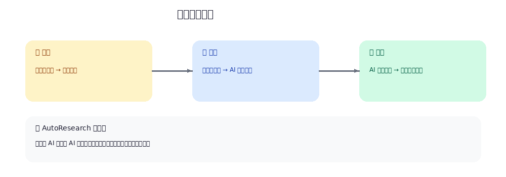

🚀 Karpathy AutoResearch
让 AI 自动做 AI 研究 —— 一夜跑完 100 个实验的自动化科研框架
⭐ 35K+ Stars (一周内)
📌 一句话总结
"你睡一觉，AI 跑了 100 个实验。" —— 这是 Karpathy 的原话。
"你睡一觉，AI 跑了 100 个实验。" —— 这是 Karpathy 的原话。
630
行代码
100+
实验/晚
5min
每次训练
19%
验证分数提升
🎯 核心概念：什么是 AutoResearch？
项目定位
AutoResearch 是一个让 AI Agent 在单 GPU 上通宵自动运行机器学习实验 的框架。

图1: 传统科研流程与 AutoResearch 流程对比
为什么这个项目火了？
| 传统方式 | AutoResearch 方式 |
|---|---|
| 人类手动调参 | AI 自动调参 |
| 一天跑 3-5 个实验 | 一晚跑 100 个实验 |
| 需要深厚的 ML 背景 | 只需要写好 Prompt |
| 容易疲劳、遗漏 | AI 不知疲倦 |
Karpathy 的实测数据：
• 把 AI Agent 扔在 GPU 上跑了 2 天
• Agent 自己跑完了 ~700 个实验
• 从中找到了 20 个真正有效的改进
• 把 AI Agent 扔在 GPU 上跑了 2 天
• Agent 自己跑完了 ~700 个实验
• 从中找到了 20 个真正有效的改进
🏗️ 项目架构：极简设计哲学
三个核心文件
整个项目只有 630 行代码，三个核心文件：
autoresearch/
├── prepare.py # 固定不变：数据准备、工具函数
├── train.py # AI 修改：模型、优化器、训练循环
├── program.md # 人类编写：研究指令
└── pyproject.toml # 依赖配置📄 prepare.py（不要改）
# 包含：常量定义、数据下载、BPE分词器训练、数据加载器、评估工具
# 这个文件 AI 不会碰，保持稳定📄 train.py（AI 来改）
# 包含：完整的 GPT 模型定义、优化器（Muon + AdamW）、训练循环、验证逻辑
# AI 可以改：模型架构、超参数、优化器配置、正则化方法...一切都可以改！📄 program.md（你来写）
# 这是给 AI 的"研究指令"
## 研究目标
- 降低验证集 BPB（bits per byte）
## 约束条件
- 每次训练固定 5 分钟
- 只修改 train.py
- 改进必须可验证
## 建议方向
- 尝试不同的注意力模式
- 调整模型深度和宽度
- 实验不同的优化器配置工作流程图

图2: AutoResearch 完整工作流程
🚀 快速上手：从零开始
环境要求
| 要求 | 说明 |
|---|---|
| GPU | NVIDIA GPU（推荐 H100，其他也可） |
| Python | 3.10+ |
| 包管理器 | uv（现代 Python 包管理器） |
安装步骤
# 1. 安装 uv
curl -LsSf https://astral.sh/uv/install.sh | sh
# 2. 克隆项目
git clone https://github.com/karpathy/autoresearch.git
cd autoresearch
# 3. 安装依赖
uv sync
# 4. 准备数据和分词器（约2分钟）
uv run prepare.py
# 5. 手动运行一次训练（约5分钟）
uv run train.py启动自主研究模式
# 方式一：使用 Claude Code
# 在项目目录下启动 Claude Code，然后说：
"Hi，看看 program.md，我们开始新实验吧！"
# 方式二：使用其他 AI Agent
# 把你的 AI Agent 放到这个仓库里，关闭权限确认，然后给它 Prompt低配置适配（MacBook 等）
# 在 prepare.py 中调整：
MAX_SEQ_LEN = 256 # 降低序列长度
EVAL_TOKENS = 降低 # 减少验证数据量
# 在 train.py 中调整：
DEPTH = 4 # 降低模型深度（默认8）
VOCAB_SIZE = 4096 # 降低词表大小（默认8192）
WINDOW_PATTERN = "L" # 使用简单注意力模式
TOTAL_BATCH_SIZE = 2**14 # 降低批次大小
推荐数据集：TinyStories（GPT-4 生成的短故事，熵更低，小模型也能学出效果）
📊 核心设计理念
固定时间预算
每次训练 = 固定 5 分钟（wall clock）| 优点 | 缺点 |
|---|---|
| 不同实验可直接比较 | 不同算力平台结果不可比 |
| 自动适配你的硬件 | - |
| 找到最适合你平台的配置 | - |
预期实验数量：每小时约 12 个实验，一晚（8小时）约 100 个实验
单一评估指标
val_bpb（验证集 bits per byte）越低越好为什么用 BPB？与词表大小无关，可以公平比较不同架构，直接反映模型压缩效率
Git 驱动的实验追踪
# 每个成功的改进都会提交到 feature 分支
git log --oneline
# a1b2c3d experiment_042: val_bpb 0.97 (was 1.0)
# d4e5f6g experiment_041: val_bpb 0.98🌟 实际案例：Shopify CEO 的实验
Tobi Lutke（Shopify CEO） 使用 AutoResearch 的结果：
| 指标 | 改进 |
|---|---|
| 验证分数提升 | 19% |
| 模型大小 | 更小的模型 |
| 对比 | 小模型超越手动配置的大模型 |
关键发现：AI 发现的优化后来被整合回 Karpathy 的 nanochat 框架。
🔬 相关项目对比
自动化科研项目全景
| 项目 | 核心特点 | 适用场景 | 难度 |
|---|---|---|---|
| AutoResearch | 单文件、单GPU、5分钟实验 | ML模型调优 | ⭐ 入门 |
| EvoScientist | 多智能体、记忆进化、端到端 | 完整科研流程 | ⭐⭐⭐ 进阶 |
| AI Scientist | 文献→假设→实验→论文 | 学术研究 | ⭐⭐⭐ 进阶 |
| AlphaEvolve | Google DeepMind | 科学发现 | ⭐⭐⭐⭐ 高级 |
EvoScientist 详解
核心创新：让 AI 科学家学会"长记性"

图3: EvoScientist 多智能体架构与记忆模块
三大进化机制：
- 想法方向进化：从成功/失败中学习研究方向
- 想法验证进化：避免重复无效的假设
- 实验策略进化：积累有效的代码模式
实测成果：6 篇完整论文被 ICAIS 2025 接收，2 篇获奖（最佳论文奖 + AI 评审奖）
项目选择指南

图4: 根据需求选择合适的自动化科研框架
💡 新手常见问题
Q1: 我不懂深度学习，能用吗？
可以！ 这正是 AutoResearch 的魅力所在。你只需要写清楚研究目标，告诉 AI 评估标准，让 AI 自己去探索。
Q2: 需要什么样的 GPU？
| GPU | 预期效果 |
|---|---|
| H100 | 完整体验，最佳效果 |
| RTX 4090 | 良好体验，需调整参数 |
| RTX 3080 | 可用，需大幅降低模型规模 |
| MacBook M系列 | 需要使用 fork 版本，降低配置 |
Q3: AI 会改坏代码吗？
不会！ 设计了安全机制：每次实验独立运行，只有改进才会保留，所有改动通过 Git 追踪，可以随时回滚。
Q4: 如何写好 program.md？
# 研究目标
降低验证集 BPB，目标 < 0.95
# 约束条件
- 每次训练 5 分钟
- 只修改 train.py
- 保持代码可读性
# 建议探索方向
1. 注意力机制变体
2. 优化器调整
3. 正则化方法
# 评估标准
val_bpb 降低 = 改进有效
val_bpb 上升 = 改进无效，回滚Q5: 一晚真的能跑 100 个实验吗？
是的！ 每个实验 = 5 分钟训练 + ~1 分钟启动/评估，每小时 ≈ 10 个实验，8 小时 = 80-100 个实验
📈 进阶技巧
多 Agent 协作
# 可以启动多个 Agent 并行实验
# Agent 1: 探索架构变化
# Agent 2: 探索优化器配置
# Agent 3: 探索正则化方法
# 最后合并各 Agent 发现的有效改进自定义评估指标
# 除了 val_bpb，可以添加：
# - 训练速度（tokens/sec）
# - 内存占用
# - 推理延迟
# - 特定任务性能迁移到其他领域
# AutoResearch 的理念可以迁移到：
# - 超参数调优
# - 神经架构搜索（NAS）
# - 数据增强策略
# - 损失函数设计🎓 学习路径

图5: 从新手到进阶的完整学习路径
🔗 相关资源
官方资源
| 资源 | 链接 |
|---|---|
| AutoResearch GitHub | github.com/karpathy/autoresearch |
| nanochat（父项目） | github.com/karpathy/nanochat |
| Karpathy Twitter | @karpathy |
相关项目
| 项目 | 链接 | 说明 |
|---|---|---|
| EvoScientist | evoscientist.ai | 多智能体进化框架 |
| EvoScientist Paper | arXiv:2603.08127 | 学术论文 |
学习资料
| 资料 | 说明 |
|---|---|
| Karpathy YouTube | "Let's build GPT" 系列 |
| nanoGPT 教程 | 从零实现 GPT |
| "Dummy's Guide" | 社区贡献的新手指南 |
📝 总结
AutoResearch 的核心价值

图6: AutoResearch 的核心价值与 Karpathy 金句
科研范式演变

图7: 从过去到未来的科研范式演变
关键要点
- 极简设计：630 行代码，三个文件，清晰分工
- 固定时间预算：5 分钟实验，公平比较
- 单一指标：val_bpb，简单明了
- Git 驱动：所有改动可追踪、可回滚
- 低门槛：新手也能快速上手
AutoResearch
Karpathy
AI自动化
机器学习
科研自动化